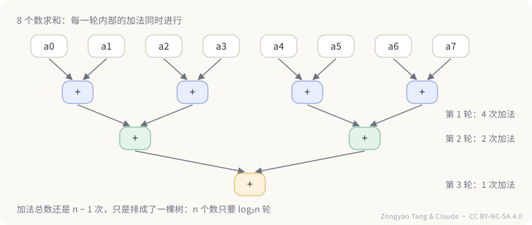

前面的例子都是“每个输出只依赖少量输入”，天然能并行。这一单元看两种看起来必须串行的计算：把一堆数合成一个（归约），和每个位置都依赖前面所有数（前缀和）。线索是：归约可以像淘汰赛那样并行 → 怎么安排线程才不浪费 → 并行改变了计算顺序会带来什么 → 更难的前缀和怎么办 → 并行算法要算两笔账 → 这些为什么对 Transformer 重要。
第 3 部分 · GPU 与 CUDA 执行模型3.5 并行模式：归约与扫描
这一单元回答求和、前缀和这类看似只能一个接一个算的事，怎么并行？
承接 3.4：用分支发散和合并访存的知识看两个最常用的并行模式；softmax、LayerNorm 和 Flash Attention 都建立在它们之上。
- 归约就是淘汰赛：n 个数，log n 轮决出结果
- 让还在干活的线程挨在一起
- 浮点加法不满足结合律：并行求和每次可能差一点
- 前缀和看似串行，其实可以“分段各算，再补上前面的总和”
- 并行算法要算两笔账：步数和总工作量
- softmax、LayerNorm 里都藏着归约
讲解
1归约就是淘汰赛：n 个数，log n 轮决出结果
求和、求最大值这类归约（reduction），串行要做 n−1 步。并行时两两配对、每轮淘汰一半，log₂n 轮就得到结果，总运算量仍是 n−1 次。前提是运算满足结合律，可以随意调整计算顺序。
归约是指把一组数用某个运算合成一个结果：求和、求最大值、求最小值都是。串行的写法是一个个累加：
((((a0 + a1) + a2) + a3) + ...，n 个数要 n−1 步，而且每一步都依赖上一步的结果，看起来没法并行。关键的观察是：对加法来说，先算哪两个并不影响结果。于是可以换一种加括号的方式：
8 个数：a0 a1 a2 a3 a4 a5 a6 a7 第 1 轮：(a0+a1) (a2+a3) (a4+a5) (a6+a7) 4 次加法，同时进行 第 2 轮：(…+…) (…+…) 2 次加法，同时进行 第 3 轮：(…+…) 1 次加法
每一轮内部的加法互不依赖，可以同时做；每一轮把数的个数减半，所以 n 个数需要 log₂n 轮。100 万个数，串行要 100 万步，并行只要 20 轮。总的加法次数没变，还是 n−1 次，只是排列成了一棵树。

把累加重新加括号，就成了一棵树 能这样重新加括号，要求运算满足结合律：(a+b)+c = a+(b+c)。加法、乘法、最大值、最小值都满足；减法、除法不满足，不能直接这样做。
打个比方像世界杯淘汰赛：32 支队不用打循环赛，5 轮就能决出冠军。PMPP 讲归约时正是用世界杯赛程举的例子。
所以 GPU 上的并行归约是“树”状的；越往后活跃的线程越少，怎么安排哪些线程继续干活，决定了效率（见下一张卡）。
出处PMPP §10.2PMPP §10.2 世界杯的例子- 淘汰赛每一轮都有一半的“选手”退场。在 GPU 上，退场的是线程。谁退场、谁留下，对性能影响很大。
2让还在干活的线程挨在一起
朴素的树形归约让第 0、2、4…号线程继续工作，活跃线程散布在每个 warp 里，几乎每个 warp 都在发散。改成让前一半线程继续工作，活跃线程就集中在少数几个 warp 里，其余的 warp 整个退出。
最直接的实现是：第 1 轮，偶数号线程把右边邻居的值加到自己身上；第 2 轮，编号是 4 的倍数的线程继续；第 3 轮，8 的倍数……
看看这对 warp 意味着什么。第 1 轮，每个 warp 里有 16 个线程在工作、16 个闲着；第 2 轮，8 个工作、24 个闲着。活跃的线程均匀地散在所有 warp 里，于是每个 warp 都在发散，都要占着硬件，里面却只有少数线程在做事。
换一种安排：第 1 轮，前一半线程（0 到 n/2−1）各自加上后一半里对应位置的值；第 2 轮，前四分之一的线程继续……活跃的线程始终是编号最小的那一段，是连续的。
这样一来，一个 warp 要么 32 个线程全部在工作，要么全部已经退出（硬件可以直接跳过它）。只有在最后几轮、活跃线程少于 32 个时才会出现发散。同时，活跃线程访问的地址也是连续的，访存自动合并。
两个版本做的加法一模一样，只是“第几号线程负责第几对数”的对应关系变了。这是上一单元那句话的实例：减少发散往往靠重新安排数据，而不是改算法。
打个比方淘汰赛打到后面，与其让晋级的队伍分散在各个球场，不如集中到少数几个球场，其他球场直接关门。
所以同样的算法，只改“谁继续工作”的下标规则，就能大幅减少分支发散；之后再配合共享内存和线程粗化继续优化。
出处PMPP §10.4- 前面说加法满足结合律，所以可以随意改变相加的顺序。对整数这完全成立；对浮点数，只是近似成立。
3浮点加法不满足结合律：并行求和每次可能差一点
数学上 (a+b)+c = a+(b+c)，但浮点数每相加一次都要舍入，顺序不同，结果就可能在最后几位不同。并行归约改变了相加的顺序；用原子操作时，顺序还取决于哪个线程先到，每次运行都可能不同。
浮点数只有有限的有效数字（float 大约 7 位十进制）。每做一次加法，结果都要舍入到这个精度，舍入会丢掉一点信息。
举个例子，假设只能保留 3 位有效数字，要算 100 + 0.4 + 0.4：
- 从左到右：100 + 0.4 = 100.4，舍入成 100；再加 0.4，还是 100。结果是 100。
- 先加小数：0.4 + 0.4 = 0.8；100 + 0.8 = 100.8，舍入成 101。结果是 101。
顺序不同，结果就不同。真实的浮点数精度高得多，差别出现在最后一两位，但道理一样。
串行求和是一种顺序，树形归约是另一种顺序，所以两者的结果会有微小差别。这不是 bug，两个结果都是“正确到舍入误差以内”。
更进一步，有些并行实现的顺序本身是不固定的。比如多个线程用原子操作往同一个变量上累加，谁先加、谁后加取决于运行时的调度，每次运行都可能不同，结果也就每次略有不同。这是 GPU 上训练不能逐位复现的主要来源之一。
实际影响：验证自己写的 kernel 时，要用误差容限来比较（比如相对误差小于 10⁻⁵），不能要求和参考结果完全相等（见 4.1）。
打个比方像用一个只能显示三位有效数字的计算器算账：先把零头加在一起再加大数，和先加大数再逐个加零头，结果会不一样。
所以在 GPU 上同一个训练跑两次，loss 在小数点后几位不同是正常的；需要完全可复现时，要用确定性的归约顺序（PyTorch 的 deterministic 选项），代价通常是更慢。
后面会用到 先写一个对的，再写一个快的出处PMPP §10.2- 归约把一组数合成一个结果。还有一类更难的计算：每个位置都要一个结果，而且每个结果都依赖它前面的所有数。
4前缀和看似串行，其实可以“分段各算，再补上前面的总和”
前缀和（scan）里每个位置的结果都依赖它前面的所有元素，看起来只能顺序算。分层的做法是：每个 block 先算自己那一段的前缀和，再对各段的总和做一次前缀和，最后把“前面所有段的总和”加回每一段。
前缀和（scan）的定义：输入
[3, 1, 7, 0, 4, 1, 6, 3]，输出[3, 4, 11, 11, 15, 16, 22, 25]，第 i 个输出是前 i 个数的和。串行算法只要一行：out[i] = out[i-1] + in[i]，每一步都用到上一步的结果，依赖关系是一条长链。打破这条链的办法是分段。把上面 8 个数分成两段
[3, 1, 7, 0]和[4, 1, 6, 3]：- 第一步：两段各自独立地算前缀和，得到
[3, 4, 11, 11]和[4, 5, 11, 14]。两段互不依赖，可以同时算。 - 第二步：第二段的结果还差“第一段的总和”。第一段的总和是 11，给第二段每个数加上 11，得到
[15, 16, 22, 25]。这一步每个位置也互不依赖，可以同时算。
段数很多时，“每一段前面所有段的总和”本身又是一个前缀和（对各段总和做的前缀和），可以用同样的办法再做一层。在 GPU 上，一段就是一个 block 处理的数据。
前缀和的用处比看起来大得多。比如从 100 万个元素里挑出满足条件的那些、紧凑地排在一起：先给每个元素标 1 或 0，对这些标记做前缀和，结果正好是每个被选中的元素在输出里的位置。排序、稀疏矩阵、内存分配，背后都是它。
打个比方像几个收银台同时清点各自的流水，最后只要知道排在前面的收银台各收了多少，就能算出全店每一笔的累计金额。
所以“依赖前面所有结果”的计算也能并行，代价是多走几轮。这个思路在 GPU 上反复出现：并行基数排序、流压缩（stream compaction）都建立在 scan 上。
后面会用到 并行算法要算两笔账：步数和总工作量出处PMPP §11.6- 第一步：两段各自独立地算前缀和，得到
- 段内的前缀和怎么并行？有不止一种算法，它们快慢不同，“浪费”的程度也不同。这引出了评价并行算法的两个指标。
5并行算法要算两笔账：步数和总工作量
Kogge-Stone scan 步数少（log n 步），但总加法次数约 n log n；Brent-Kung 的步数多一倍左右，但总工作量只有 O(n)，和串行算法同一个量级。
评价一个并行算法要看两个数：
- 步数：假设处理器无限多，需要多少轮。它决定了理想情况下有多快。
- 总工作量：所有轮次加起来，一共做了多少次运算。它决定了要消耗多少计算资源。
Kogge-Stone 算法：每一轮，每个位置都把“距离自己 1、2、4、8……格”的那个位置的值加过来。log₂n 轮后全部完成，步数最少。但每一轮几乎所有位置都在做加法，总工作量约为 n·log₂n。n = 1024 时，大约一万次加法，而串行算法只要 1023 次。
Brent-Kung 算法：先像归约那样自底向上算一棵树（n−1 次加法），再自顶向下把结果分发下去。步数大约是 2·log₂n，多了一倍；但总工作量只有约 2n，和串行算法是同一个量级。这样的算法称为 work-efficient。
怎么选？如果数据量小、GPU 有大量空闲的运算单元，多做的工作不花时间，步数少的 Kogge-Stone 更快。如果数据量很大、GPU 已经满负荷，多出来的 10 倍工作量是实打实要排队执行的，这时 Brent-Kung 更好。
这也回应了 3.4 的线程粗化：并行不是免费的，资源有限时，“少做无用功”和“减少步数”同样重要。
打个比方人手充足时，可以“大家多干点、早点收工”；人手有限时，多出来的活只能排队，反而更慢。
所以数据量小、GPU 有空闲时，步数少的算法更快；数据量远大于线程数、硬件已经跑满时，工作量少的（work-efficient）算法更好。
出处PMPP §11.3PMPP §11.4- 最后把这一单元和课程的主线接上：这些并行模式和 Transformer 有什么关系？
6softmax、LayerNorm 里都藏着归约
softmax 要先求一行的最大值（为了数值稳定），再求指数和，这是两次归约；LayerNorm 要求均值和方差，也是归约。Transformer 里很多看起来“逐元素”的算子，瓶颈其实是行内的归约和对显存的反复读写。
看 softmax 的计算过程。对一行数 x：
- 先求这一行的最大值 m（一次归约）。减去最大值是为了数值稳定，避免指数运算溢出。
- 对每个元素算 exp(x − m)（逐元素）。
- 把这些指数加起来得到 s（又一次归约）。
- 每个元素除以 s（逐元素）。
两次归约、两次逐元素运算，朴素实现要把这一行数据从显存读四遍。LayerNorm 类似：求均值是一次归约，求方差又是一次，然后逐元素做归一化。
这些算子的运算量很小，算术强度很低，是典型的带宽受限（3.3）。所以优化它们的关键不是把加法做快，而是减少遍历数据的次数：能不能在一次遍历里同时得到最大值和指数和？
可以。办法是边读边维护“到目前为止的最大值”和“到目前为止的指数和”，遇到更大的值时把之前的和修正一下。这叫 online softmax。它让 softmax 不再需要先看完整行，于是注意力可以分块计算，中间结果不必写回显存。这正是 Flash Attention（4.4）的核心。
打个比方像给全班的成绩“按最高分折算”：看起来是给每个人各算一个数，其实先得把全班的卷子翻一遍找出最高分，再翻一遍求总和。费时间的是这两遍翻卷子，不是最后那一下除法。
所以写好归约是写好 Transformer 算子的基础；把多次归约合并成一遍扫描（online softmax），正是 Flash Attention（4.4）的关键一步。
后面会用到 在线 softmax：不必看完整行，也能算对
串起来
因为加法满足结合律，求和可以两两配对、log n 轮完成；但浮点加法并不严格满足结合律，所以结果会有微小差别；前缀和用“分段各算、再补上前面的总和”也能并行；评价一个并行算法要同时看步数和总工作量。softmax 和 LayerNorm 的核心就是归约，这是通向 Flash Attention 的台阶。
考考自己
不看讲解，用自己的话讲一遍。
- 并行归约为什么只需要 log n 轮？它对运算有什么要求？
- 树形归约里，为什么让“前一半线程”继续工作比让“偶数号线程”继续工作要好？
- 为什么并行求和的结果可能和串行求和不完全一样？
- 前缀和每个位置都依赖前面所有元素，为什么还能并行？
- Kogge-Stone 和 Brent-Kung 两种 scan 算法各自的特点是什么？什么时候该选哪个？
- softmax 和 LayerNorm 里各有哪些归约？这对优化它们意味着什么？
术语
- reduction
- 归约
- prefix sum
- 前缀和（scan）
- atomic operation
- 原子操作